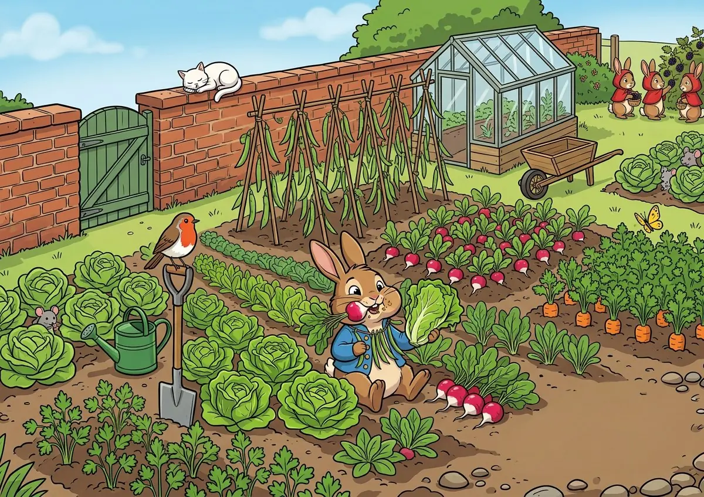

A STORY TO SHARE · 亲子英语伴读
A little story.
A little adventure.
读一个小故事，
去一趟小小的菜园。
听听彼得的声音，找找藏起来的朋友。
大约 15 分钟，再回到纸质作业。
无需登录 · 进度只保存在这台设备

The Tale of Peter RabbitOUR LITTLE BOOK
今天，读哪一章？
每章五枚小印章
A STORY TO SHARE · 亲子英语伴读
读一个小故事，
去一趟小小的菜园。
听听彼得的声音，找找藏起来的朋友。
大约 15 分钟，再回到纸质作业。
无需登录 · 进度只保存在这台设备

The Tale of Peter RabbitOUR LITTLE BOOK
每章五枚小印章